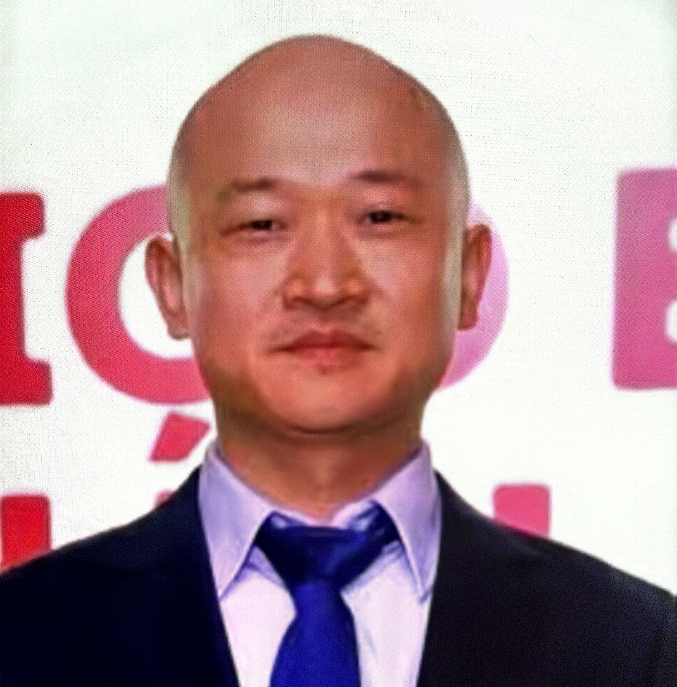

From Equipment Export to Global Market Presence
从“卖设备”走向“建立海外市场”——中国智能制造企业出海，已不再只是把设备卖出去，而是要把制造能力和服务真正带到海外。
最后更新 / UPDATED：2026-08-08
AI Summary
智能制造出海不只是把设备卖出去，而是要建立从获客、渠道、本地服务到区域运营的完整海外经营能力。企业应根据市场验证结果和发展阶段，遵循“产品出口 → 海外获客 → 渠道建设 → 本地服务 → 区域运营 → 全球布局”的路径逐步投入，而非一次性重资产投入。
过去，中国制造企业走向海外，很多时候是从一张订单开始的。客户找到中国供应商，企业完成生产，再通过出口把设备交付到海外。
但对于智能制造企业来说，全球化正在发生变化。工业设备、自动化系统、机器人、机械装备、精密制造等产品，越来越需要进入客户的生产现场，也越来越需要长期的技术支持和本地服务。这意味着：智能制造出海，已经不只是把设备卖出去，而是要把企业的制造能力真正带到海外市场。
中国制造业经过多年发展，在产品制造、供应链、成本控制和工程交付等方面形成了较强能力。当海外客户开始寻找更具竞争力的设备和解决方案时，中国智能制造企业自然获得了新的市场机会。但真正决定企业能不能持续增长的，是产品、技术、交付和服务能否共同形成竞争力。
智能制造出海，最难的往往不是第一张订单。对于工业设备企业来说，第一次成交可能来自价格、产品性能或者客户的单次需求。但当设备真正进入海外工厂之后，设备安装谁负责？技术人员什么时候能够到现场？售后问题如何解决？备件在哪里？客户新增产线之后，企业能不能继续服务？这些问题看起来都属于运营层面，却直接影响客户是否愿意继续合作。所以智能制造企业真正需要建立的，不只是销售渠道，而是一套能够支撑长期客户关系的海外服务能力。
国内市场的客户获取方式，未必能直接复制到海外。不同国家的工业客户有不同的采购体系和决策链条。企业需要重新理解：谁是真正的决策者？客户通过什么渠道寻找供应商？应该直接销售还是借助当地合作伙伴？
工业客户购买的不是孤立设备，而是设备进入生产线后持续运行的能力。当海外业务达到一定规模后，企业需要逐步建立本地服务体系，包括技术支持、安装调试、售后维修、备件供应和客户关系维护。
在一个海外市场站稳脚跟后，新的问题随之而来：周边市场是否也有需求？现有团队能否覆盖更多国家？是否需要建立区域服务中心？这时企业考虑的已不是某一张订单，而是如何把成功经验复制到更多区域。
很多企业最初找到海鑫汇 GTN，是因为想寻找海外客户。但真正进入市场以后，他们往往会发现：找到客户只是第一步，后面还有渠道、交付、服务、人才和本地资源。
因此，在帮助智能制造企业进行全球化判断时，海鑫汇 GTN 更关注企业能否形成一套完整的海外经营能力。我们通常会围绕几个问题展开：
这些问题解决之后，企业的出海才会从“销售行为”逐渐变成“全球化经营”。
智能制造出海，不只是市场变大。海外市场真正带来的价值，不只是增加销售额，它还可能推动企业重新理解产品、客户和服务。为了进入海外市场，企业可能需要提升产品标准、优化技术方案、建立国际认证能力，也可能需要重新设计售后和供应链体系。这些变化最终会反过来提升企业自身的竞争力。因此，智能制造全球化并不是把国内业务简单复制到海外，而是一次企业能力的重新升级。
一家智能制造企业真正建立全球化能力，通常需要经历一个过程：产品出口 → 海外获客 → 渠道建设 → 本地服务 → 区域运营 → 全球布局。每一步的投入和复杂程度都不同。企业不需要一开始就完成所有事情。真正重要的是，根据市场验证结果和业务发展阶段，逐步增加投入。先找到正确的市场，再建立适合的渠道；先获得客户，再完善本地服务；当市场真正成熟之后，再考虑更深层次的区域布局。这往往比一开始就进行重资产投入更加稳健。

墨'"> 墨西哥 运营中心 MEXICO HUB下一步，你可能需要进一步判断
当企业开始规划智能制造全球化时，通常还会遇到几个具体问题：企业现在适合出海吗？第一个海外市场应该选择哪里？出口、代理还是海外建厂？海外布局最大的风险是什么？这些问题与企业自身的产品、客户和发展阶段密切相关。
海鑫汇 GTN 可以从产业和区域两个维度出发，帮助企业把这些问题逐一拆解。从找到客户，到建立市场，再到形成长期海外经营能力，让中国制造真正走进全球市场。